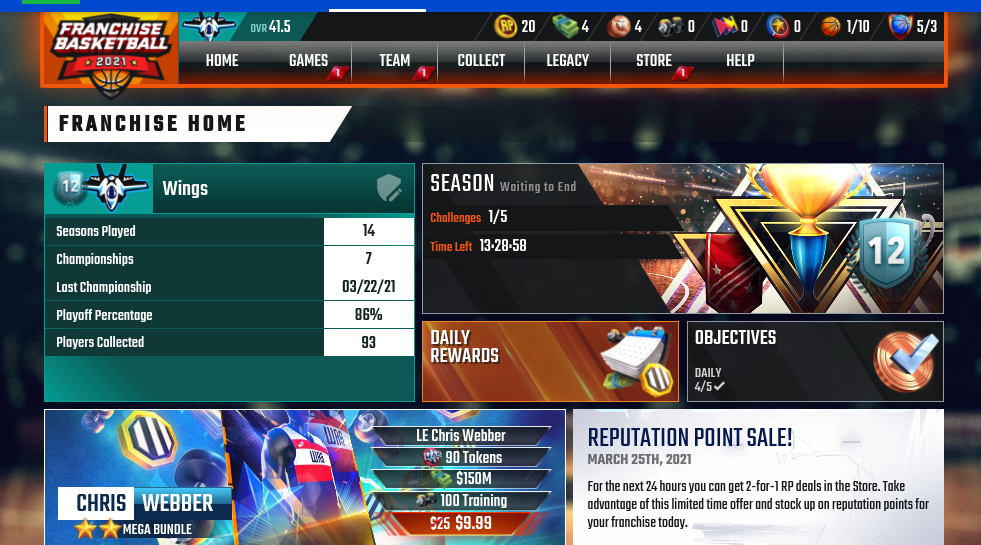
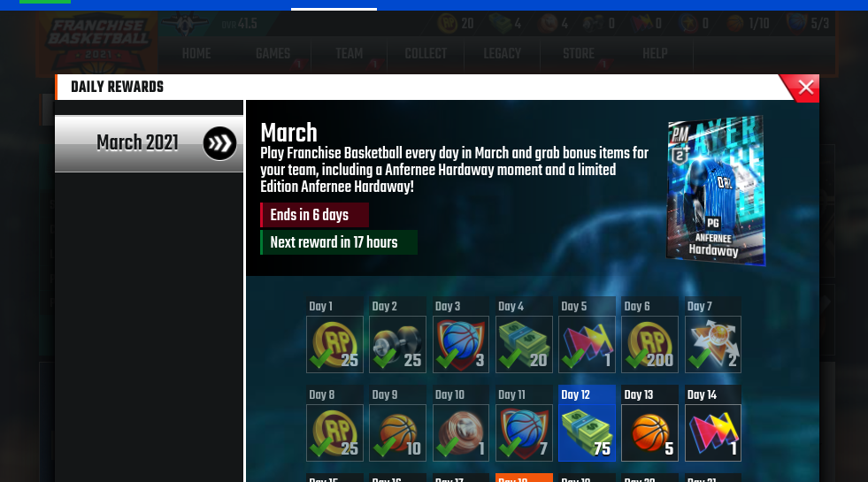
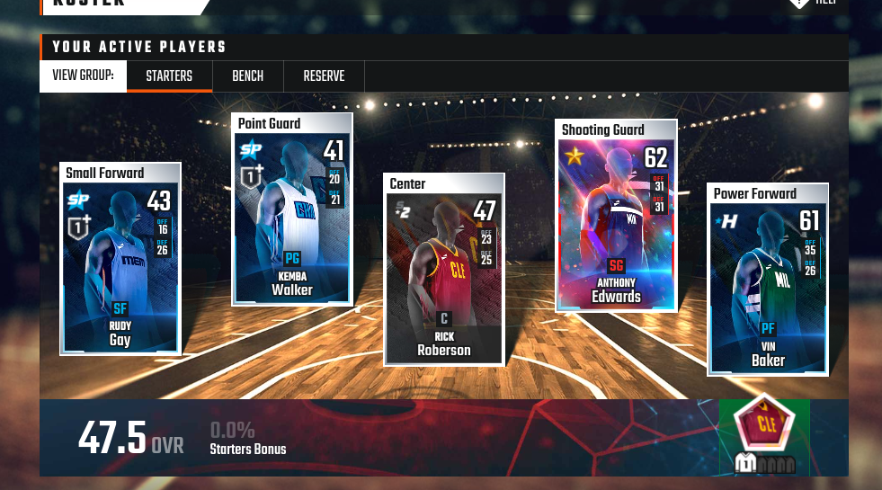

When I went to cbssports.com to fill out my bracket, I looked around their site for a bit. Turns out they have some really cool games on there, including one I have been playing recently called NBA Franchise Basketball. It's a really nice casual game you can check once or twice a day and it's really satisfying to build your team and progess through the seasons. There are a lot of different elements to it from season games, pro games, training, bonuses, and more which I'll explain in this article.
So this game is a basketball managing sim instead of a basketball game like 2k. You collect different players from all the teams of the NBA and then add them to your roster. Each player has a level which can be upgraded using training packs, which can be bought with in game currency. There are two main types of currency: franchise cash and reputation points. Some things can only be bought with one or the other, but some can be bought with both kinds. Other things you can buy are bonuses, player packs, team synergies, and more. Bonuses increase player skills like inside, outside, rebounding and focus. These last around 24 hours and you get a free one every 12 hours.
There are training packs that increase a player's level. You can buy these with reputation points or you can wait 12 hours to get a free one. Now you may wonder how to get reputation points and franchise cash. You can get reputation points by playing season games and franchise cash by playing exhibitions. The way these games work is that you set up a roster, bench, and reserve ahead of time. You can change these out whenever you want. Your starters play 20 minutes, your bench plays 16 minutes, and your reserve plays 12, so put your best players on your starters and your bench. At the start of the game you'll choose you star player, preferably your best player to play 38 minutes for you. After that you pick offense and defense strategy, and you're off! The games take about 10 seconds each, and at the end you get a summary of who scored the most points got the most assists, etc. This is important to know since in a season you need to complete at least 3 of 5 "achievements" about points, assists, blocks, and more which allows you to play the postseason games.
Shown above is my roster. My best player so far is Anthony Edwards, a level 62 who I got as a reward when I collected all the players from series 1. Players can be purchased with franchise cash and each series has better players in it than before. All in all I think this is a really good casual game for basketball fans or even people that don't follow basketball that closely. By the way there is also a version of this game for baseball, football and hockey.